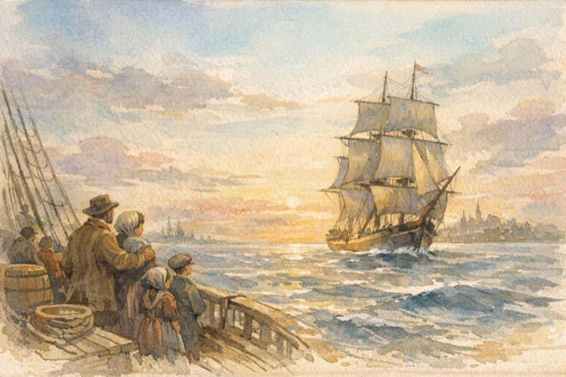
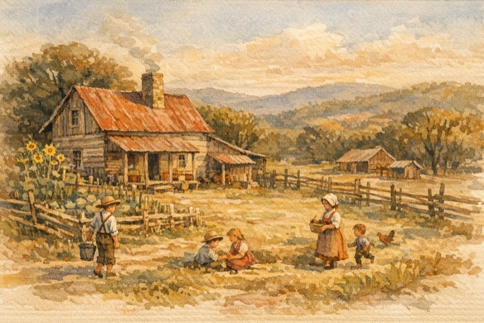

Relationship: 3rd great-grandfather (Kuthe line)
German Immigrant, Miller, Union Soldier
Frederick Kuthe (also recorded as George Frederick Kuthe) was born around 1827 in Darmstadt, Hesse, Germany.1 Prior work named his father as Andreas Kuthe (born c. 1798 in Hesse), but no primary source has been found to confirm this.
The surname Kuthe proved difficult for English-speaking clerks, appearing in records variously as Kuethe, Küthe, Kuth, Kuthy, Koothe, and even "Kite." No ship, date, or port of arrival has been confirmed for this line.2

By the 1850s Frederick had settled in the Spring Creek township of Dent County, Missouri, which had been organized in 1851. He worked as a miller — both the 1870 census and his 1865 military enlistment record list his occupation as such.3 Milling was essential to the Ozark frontier economy; Dent County's scattered settlements depended on local mills to grind corn and wheat into flour and meal. Water-powered grist mills dotted the creeks and rivers of the region, and a skilled miller was a valued member of any community. Frederick's trade placed him at the center of rural commerce in a way that farming alone would not.
In the final months of the Civil War, Frederick enlisted in the Union Army in New York City on February 14, 1865, at age 36. He was mustered into Company G, 9th New York Cavalry as a private.4 His enlistment record describes him as born in Germany, 5'6", with blue eyes and light hair, occupation miller. The 9th NY Cavalry saw action in the Shenandoah Valley and around Petersburg in the war's closing weeks. Frederick was mustered out on July 17, 1865, at Cloud's Mills, Virginia. Why he was in New York rather than Missouri at the time of enlistment is unknown—late-war bounty enlistments drew men from across the country to fill depleted units.
On January 19, 1868, Frederick married Sarah Ann Patterson (née Steagall) in Dent County.5 Sarah (born c. 1837) was a widow whose first husband had been a man named Patterson. The Dent County marriage register (Book A, 1851–1870) records the union of "KUTHE, GEORGE F." to "Sarah A. Patterson."6 Sarah brought three children from her first marriage: W. C. Paterson (b. c. 1859), N. E. Paterson (b. c. 1861), and J. H. Paterson (b. c. 1863)—all present in the 1870 census household.3 The couple settled near Salem, the county seat.

Frederick and Sarah's confirmed children include George Washington Kuthe (14 Oct 1869–1925) and Charles Fred Kuthe (31 Mar 1875). Charles Fred's WWI draft card lists "Geo. W. Kuthe" as his sibling, confirming the relationship.7 A Dent County history from the 1880s attributes "six living children: William, Mary (Mrs. Schmit), George, Catherine, Susan, Adam" to a Kuthe household, but this source may describe a different family and should be treated with caution.8 George was born in Salem and would later migrate to Oregon and then Arizona.
Frederick owned 100 acres across sections 34 and 35, Township 34, Range 6, in the Spring Creek area of Dent County.[^8b] Tragedy struck the family when Sarah Ann died in 1876 at approximately 39 years of age, leaving Frederick a widower with young children to raise.9 A delinquent tax notice in The Salem Monitor (June 15, 1876) lists "Kuthe Fred" owing $6.07 for 1875 taxes on this land — a sign of the strain on the household after Sarah's death.
The 1876 Missouri state census confirms her death: Frederick appears as head of household (male, over 45) with sons George W. and Charles, stepdaughter Nancy Patterson (c. 15), and a Wm. Ray (possibly a boarder or hired hand). No wife is listed.9 Notably, the 1876 census enumerates the family in Texas County (Township 32, Range 8), not Dent County where Frederick's land was located — the two counties border each other, and the household may have moved south after Sarah's death, or Frederick may have been working at a mill in a neighboring township.
Frederick died sometime before 1883 — likely around 1879 — leaving George (age ~10) and Charles Fred (age ~4) orphaned.10 Hiram Hodges was appointed guardian and curator of the minor children, while Wm. C. Patterson — Sarah's eldest son from her first marriage — served as administrator of the estate.11 Patterson turned over $159.45 from the estate to Hodges for the children's care.12 By the 1880 census, Charles Fred was living with the Craig family in Current township, Dent County, listed as "brother-in-law" to head Kennedy Craig — Nancy Craig (19) was Nancy E. Patterson, Sarah's daughter from her first marriage, who had married Kennedy Craig and taken in her young half-brother. A final settlement notice appeared in The Salem Monitor on June 7, 1883, and the estate was formally closed September 1888.
Frederick Kuthe's life was cut short — emigrating from Germany as a child, working as a miller in the Missouri Ozarks, serving briefly in the Union Army, and dying around age 52, just three years after his wife Sarah. He left behind orphaned children who were taken in by relatives and neighbors. Despite this, his sons carried the family westward: George to Oregon and then Arizona, Charles Fred to Oregon and then Washington. The family's German heritage persisted through the generations even as the surname shifted through a dozen spellings — Kuthe, Kuethe, Kuthy, Koothe, Kite — in American records.
An 1845 manifest for the ship Olbers, sailing from Bremen to New Orleans, lists a Küthe family from Vöhl in the Waldeck region of Hesse, headed by Heinrich Küthe (age 52), with an 18-year-old "Friederich" among his children.13 This was previously thought to be our Frederick. The Olbers Friederich is almost certainly a different person — he was 18 at arrival in 1845, while our Frederick was already in Missouri by the 1850s and consistently recorded as older. The overlapping names across both families (Anna, Friedrich, Margareth) are suggestive of kinship, but no direct link between Andreas and Heinrich has been established.
A biography of Louis Schleicher, a baker in Lancaster, Ohio, notes that he married "Miss Mary C. Kuthe, who was born in Germany in 1824, and came to America in 1845" — Mary traveled on the Olbers with Heinrich's family and may be a relative of our Frederick, but the connection is unconfirmed.14
A third Kuthe — Wilhelm, a baker from Melsungen — arrived in Baltimore in 1842, adding to the picture of a broader Kuthe emigration network from Hesse. See the full disambiguation in research/analysis/kuthe-two-fredericks.md.
A quarterly abstract of passenger arrivals for Baltimore (April–June 1834) was long attributed to the Kuthe family, listing an "Andreas Kuth" (age 36) with wife, son "Fredk" (age 7), and daughter "Margareth" (age 3).2 The match to Kuthe family tradition appeared strong — a father named Andreas, a son Friedrich of the right age, arriving from Germany.
However, research into the Baltimore passenger index cards (BRG55) in April 2026 revealed that this family's surname was actually Huth, not Kuth. The index cards show the family arriving on the Julius Eduard on June 14, 1834, from Weilhausen, destination Pittsburgh. The "Kuth" reading on Ancestry.com was a misreading of the quarterly abstract's handwriting. This is a different family entirely. See the full analysis in research/analysis/kuthe-baltimore-1834.md.
Notes:
Birth year c. 1827 from 1870 census (age 43, "abt 1827") and 1865 enlistment (age 36, "abt 1829"). Birthplace "Darmstadt" per 1870 federal census — may refer to the Grand Duchy of Hesse-Darmstadt rather than the city itself. Father named Andreas per family tradition; no primary source confirms this.↩
NARA Microfilm M596 (Quarterly Abstracts of Passenger Lists), Roll 4, p. 67. A family arriving Baltimore April–June 1834 was previously transcribed as "Kuth" — Andreas (36), Anna D. (34), Fredk (7), Margareth (3). Research into the Baltimore passenger index cards (BRG55) in April 2026 revealed the surname is actually Huth: cards for Anna Doroth Huth (2596-1-19) and Anna Margareth Huth (2596-1-22) show the family arriving on the Julius Eduard, June 14, 1834, from Weilhausen, destination Pittsburgh. This is a different family — not the Kuthe line. The misreading of "Huth" as "Kuth" on Ancestry.com led to the erroneous attribution. See research/analysis/kuthe-baltimore-1834.md.↩
1870 United States Federal Census (Ancestry.com Operations, Inc., 2009). G F Koothe, age 43, Miller, born Darmstadt; household in Spring Creek, Dent, Missouri, Post Office Salem. Household includes: W C Paterson (11), N E Paterson (9), J H Paterson (7), G F Koothe (43), S A Koothe (33), G W Koothe (6/12). Father and mother of foreign birth.↩
"New York, Civil War Muster Roll Abstracts, 1861–1900" (Ancestry.com Operations, Inc., 2011). New York State Archives, Cultural Education Center, Albany, NY; Archive Collection #13775-83, Box #840, Roll #496. Frederick Kuthe (remarks note "also borne as Frederick C [Kuthe]" — the "C" likely a middle initial, not a separate surname), Private, Co. G, 9th NY Cavalry. Enlisted 14 Feb 1865, New York City; mustered out 17 Jul 1865, Cloud's Mills, Virginia. Born Germany, age 36, 5'6", blue eyes, light hair, light complexion, occupation miller. Credited to 8th Congressional District. See also: "U.S., Civil War Soldier Records and Profiles, 1861–1865," Historical Data Systems, comp. (Ancestry.com Operations Inc, 2009); source: New York: Report of the Adjutant-General 1893–1906. Note: physical description and occupation ("Miller") appear in the Remarks section at the bottom of the muster roll abstract, not the main form fields. Ancestry record: https://www.ancestry.com/search/collections/1965/records/290761↩
Dent County, MO Marriage Book A, 1851–1870.↩
USGenWeb Archives and Genealogy Trails transcription of Dent County marriages.↩
Charles Fred Kuthe (b. 31 Mar 1875, Missouri). WWI Draft Registration Card, 1917–1918: age 42, Yakima County, WA; sibling listed as "Geo. W. Kuthe." Also appears as "Frederick C. Kuthe" (age 5) in the 1880 census, living with the Craig family in Current, Dent County, as "brother-in-law" — Nancy Craig (19) was Nancy E. Patterson, his half-sister via Sarah's first marriage. By 1900 census: "Chas F Kuthe," age 25, in Albany, Linn County, Oregon, occupation "Bottler Soda Works," living with Nelson L. Bailey; single, literate. Father's birthplace Germany, mother's birthplace Missouri. By 1908: cigar dealer in Eugene, Oregon — arrested Nov 10, 1908 for selling "near beer" in violation of city ordinance, fined $25; case taken to circuit court as a test of the ordinance's validity (The Spokane Press, Tue, Nov 10, 1908, p. 8). By 1917: Yakima County, Washington.↩
Dent County local history (c. 1880s), listing "six living children: William, Mary (Mrs. Schmit), George, Catherine, Susan, Adam." Charles Fred was omitted, possibly because he was living with a married sister (see ^8a).↩
1876 Missouri state census, Texas County, Township 32, Range 8 (Ancestry.com, "Missouri, U.S., State Census Collection, 1844–1881," record 145829: https://www.ancestry.com/search/collections/1024/records/145829; image page 35 of 87). Ancestry indexes this as "Texas, Township 32." Household: Kuthe Frethrick (male, over 45), Kuthe George W (male, under 10), Kuthe Charles (male, under 10), Patterson Nancy (female, c. 15), Ray Wm (male). No wife listed, confirming Sarah's death by 1876. Nancy Patterson is Sarah's daughter from her first marriage, still in the household under her maiden name. The enumeration in Texas County — not Dent County where Frederick's 100-acre tract was located (T34 R6) — suggests the family relocated across the county line after Sarah's death, or that Frederick was working at a mill in the neighboring county. Also noted by family researcher SK (moleson2001): two cows listed.↩
Death before June 1883, likely c. 1879 per family researcher estimate.↩
"Final Settlement Notice," The Salem Monitor (Salem, MO), Thu, Jun 7, 1883, p. 3. Wm. C. Patterson, administrator of the estate of Frederick Kuthe, deceased, announces final settlement with the Probate Court of Dent County, to begin September 3, 1883. W.C. Patterson is Sarah Ann's eldest son from her first marriage (b. c. 1859), listed as "W C Paterson" age 11 in the 1870 census household. Image: https://www.newspapers.com/image/491369610/?match=1&clipping_id=195438438↩
Dent County Probate Records, Settlements vol. 1, p. 554. "In the matter of the minor heirs of Frederick Kuthy deceased." Hiram Hodges, Guardian & Curator, received $159.45 from W.C. Patterson, administrator of the estate of Frederick Kuthy deceased. Receipt filed with the papers.↩
ISTG (Immigrant Ships Transcribers Guild), manifest of the Olbers from Bremen to New Orleans, 13 June 1845. Previously attributed to our Frederick; now believed to be a different Kuthe family from Vöhl, Waldeck.↩
Louis Schleicher biography, noting his 1847 marriage to Mary C. Kuthe "born in Germany in 1824, and came to America in 1845." Connection to our Frederick uncertain.↩